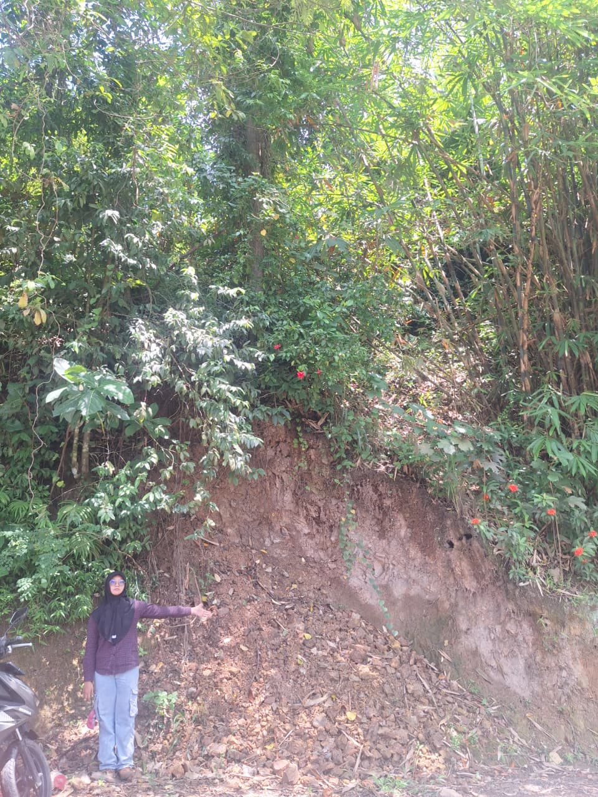
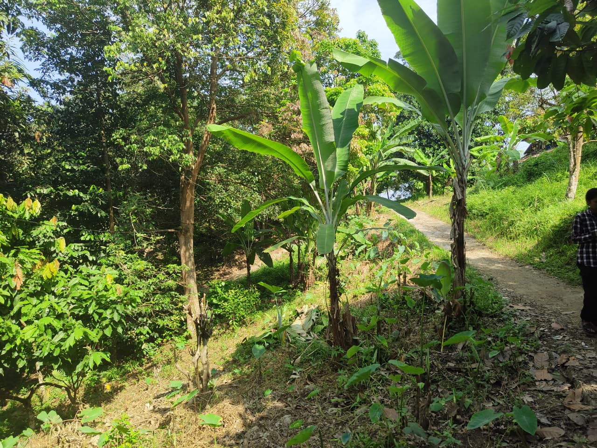
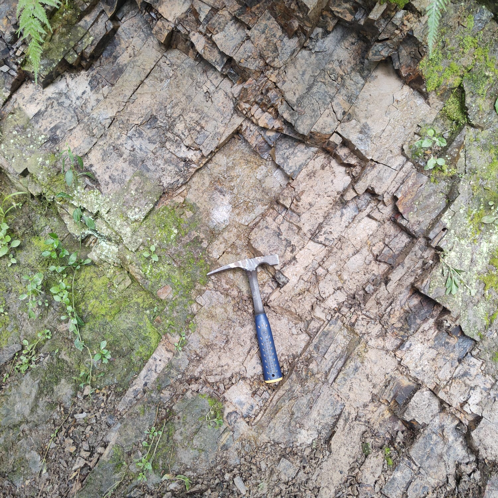
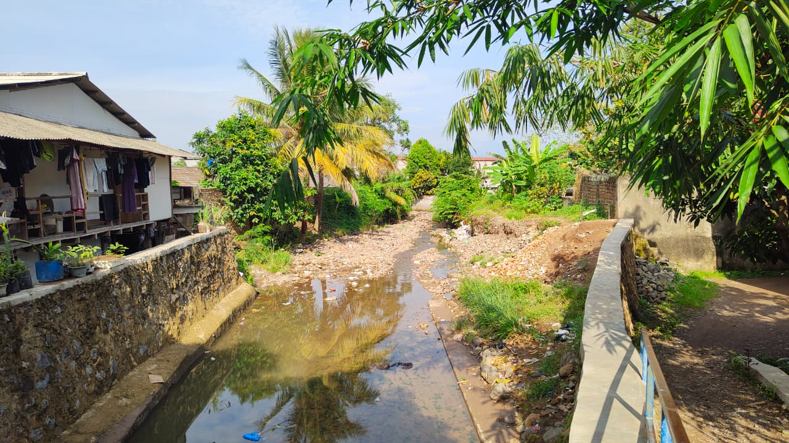
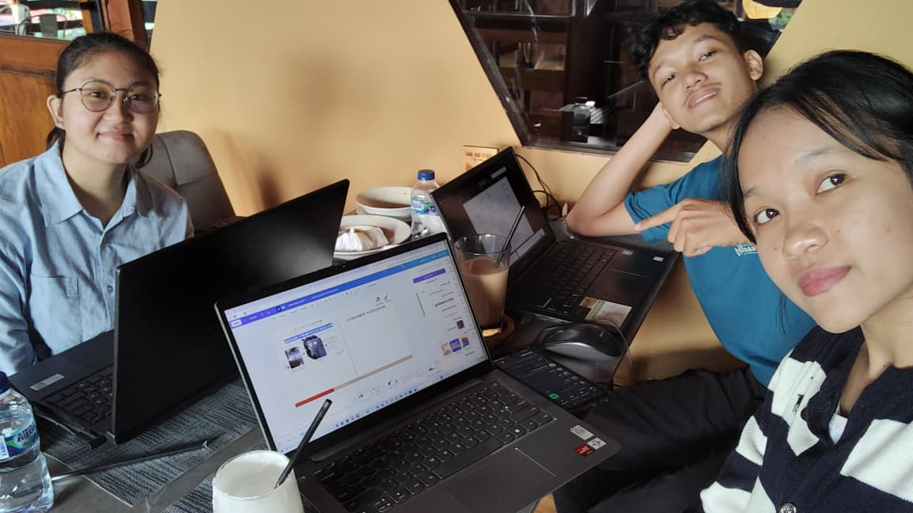
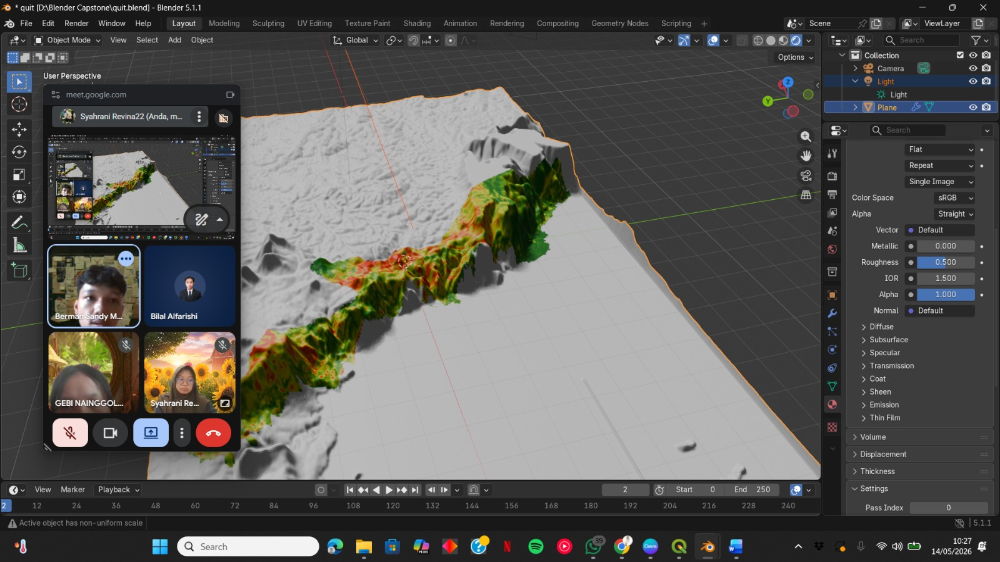
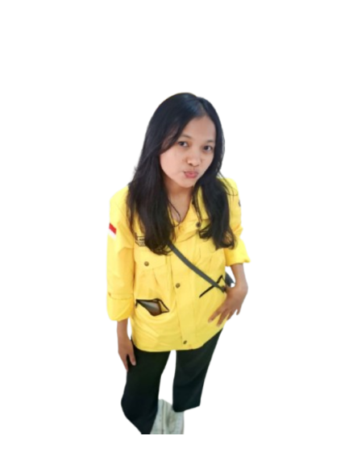
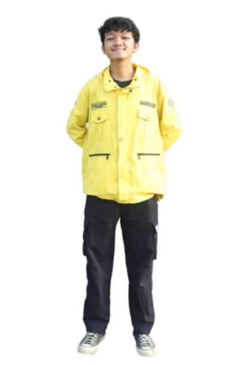
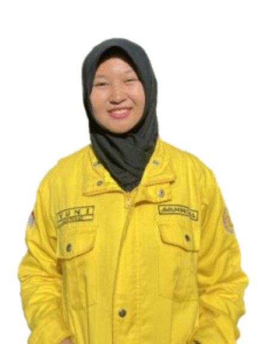

Mengapa Kecamatan Panjang Rawan Longsor?
Memahami ancaman geologi di balik perbukitan Kecamatan Panjang
Kecamatan Panjang terletak di pesisir timur Teluk Lampung dengan topografi bervariasi — dari dataran rendah pantai hingga perbukitan curam yang mencapai ketinggian signifikan. Wilayah ini dipengaruhi oleh Sesar Lampung–Panjang yang aktif secara tektonik.
Litologi didominasi batuan vulkanik lapukan seperti tuf dan breksi dari Formasi Tarahan, yang tidak stabil saat jenuh air hujan. Kombinasi kemiringan lereng curam, tekanan pembangunan permukiman, dan alih fungsi lahan menjadikan wilayah ini masuk kategori Potensi Gerakan Tanah Menengah–Tinggi menurut PVMBG (2022–2026).
Website ini menyajikan hasil pemetaan ilmiah berbasis algoritma MaxEnt sebagai panduan visual bagi masyarakat dan pemerintah kecamatan dalam upaya kesiapsiagaan bencana.
| Kecamatan | Potensi |
|---|---|
| Kemiling | Menengah |
| Panjang | Menengah–Tinggi |
| Sukabumi | Menengah |
| Tanjungkarang Barat | Menengah |
| Telukbetung Barat | Menengah |
| Telukbetung Selatan | Menengah |
Tingkat Kerentanan Longsor di Kecamatan Panjang
Peta Interaktif Kerentanan Longsor
Eksplorasi peta 2D dan model 3D terrain kerentanan longsor Kecamatan Panjang secara interaktif
Jangan mendirikan bangunan baru. Konsultasikan kondisi lereng ke ahli geologi.
Perlu kajian geoteknik sebelum membangun. Pantau retakan tanah saat hujan deras.
Waspadai saat curah hujan ekstrem. Jaga tutupan vegetasi di sekitar rumah.
Dataran pesisir relatif aman dari longsor. Tetap waspada terhadap banjir pesisir.
Metode MaxEnt & Data Penelitian
Pendekatan ilmiah yang digunakan untuk memetakan kerentanan longsor
Bayangkan Anda ingin tahu lokasi mana di Kecamatan Panjang yang "disukai" oleh longsor. Algoritma MaxEnt belajar dari 34 lokasi longsor nyata yang telah terdokumentasi, lalu mencari daerah lain dengan kombinasi kondisi serupa — kemiringan lereng, jenis batuan, jarak ke sungai, dan sebagainya — untuk memperkirakan probabilitas longsor (0–100%) di seluruh wilayah. Semakin tinggi nilai probabilitas, semakin rentan lokasi tersebut.
6 Parameter Lingkungan (Conditioning Factors)
Sumber Data Penelitian
| Sumber Data | Jenis | Instansi | Keterangan |
|---|---|---|---|
| DEMNAS | Raster DEM 8m | BIG (Badan Informasi Geospasial) | Kemiringan lereng & kelurusan |
| Peta Geologi Lembar Tanjungkarang | Vektor Polygon | Pusat Survei Geologi, Badan Geologi ESDM | Litologi & sesar |
| SHP RBI Bandar Lampung | Vektor Shapefile | BIG / Pemkot Bandar Lampung | Tutupan lahan & jaringan sungai |
| Geoportal BNPB | Point Data | BNPB (Badan Nasional Penanggulangan Bencana) | Inventarisasi kejadian longsor historis |
| Survei Lapangan | GPS Point | Tim Capstone Design ITERA, 2025–2026 | 34 titik longsor terverifikasi |






Zonasi Kerentanan Longsor
Distribusi spasial dan rekapitulasi luas kerentanan longsor Kecamatan Panjang
| Kelas | Prob. MaxEnt | Luas (km²) | (%) | Kelurahan Dominan |
|---|---|---|---|---|
| Tinggi | 0.75–1.00 |
1.31 | 9.90% | Pidada, Panjang Utara, Karang Maritim |
| Menengah | 0.50–0.75 |
2.19 | 16.60% | Panjang Selatan, Way Lunik |
| Rendah | 0.25–0.50 |
3.53 | 26.74% | Ketapang |
| Sangat Rendah | 0.00–0.25 |
6.17 | 46.76% | Srengsem, Ketapang Kuala |
| Total | 13.20 | 100% | 8 Kelurahan | |
Rekomendasi Mitigasi Bencana
Langkah konkret untuk pemerintah, warga, dan pemangku kepentingan berdasarkan hasil pemetaan
- Sistem drainase permukaan (catch drain) di mahkota lereng dan drainase bawah permukaan (horizontal drain) di badan lereng
- Dinding penahan tanah tipe Gravity Wall atau bronjong (gabion) di kaki lereng dekat aliran sungai
- Sistem terasering (benching) dengan rasio kemiringan dan lebar berm yang sesuai nilai kohesi tanah
- Perkuatan lereng dengan ground anchor atau soil nailing pada lereng kritis
- Revegetasi menggunakan tanaman berakar dalam untuk bioengineering lereng
- Penghentian penerbitan IMB baru di kelerengan >20° dalam zona Tinggi
- Pemasangan Early Warning System: Automatic Rain Gauge (ARG) dan ekstensometer
- Sosialisasi jalur evakuasi mandiri oleh BPBD untuk warga di lereng dengan batuan tuf
- Memasukkan peta kerentanan ini ke dalam tinjauan RDTR Kecamatan Panjang
- Evakuasi mandiri saat curah hujan >100mm/hari dan tanah menunjukkan retakan baru
- Sistem drainase lereng permukaan dan bawah permukaan
- Dinding penahan tanah (Gravity Wall, bronjong)
- Terasering (benching) lereng
- Perkuatan kaki lereng (gabion, sheet pile)
- Bioengineering: tanaman berakar dalam
- Pengendalian IMB di zona kerentanan Tinggi
- Sistem Peringatan Dini (EWS) — rain gauge & ekstensometer
- Integrasi peta ke RDTR Kecamatan Panjang
- Edukasi & sosialisasi evakuasi bagi warga
- Regulasi alih fungsi lahan perbukitan
Tim Pengembang
Prototipe WebGIS Zonasi Kerentanan Longsor — Teknik Geologi ITERA 2026
Anggota Tim



Pembimbing & Koordinator
Institut Teknologi Sumatera
Fakultas Teknologi Industri, ITERA